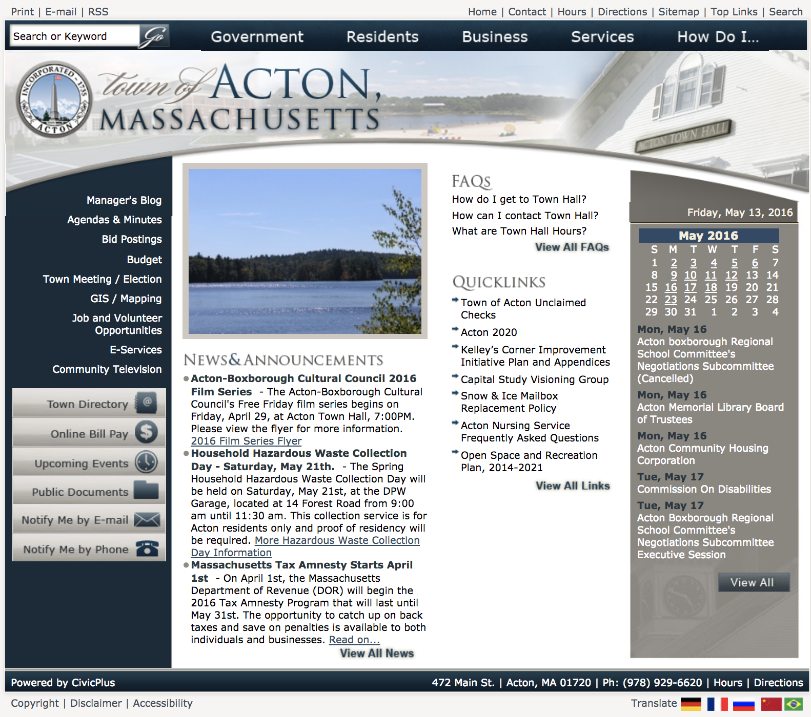

Website Redesign for the Town of Acton
September 2015 - June 2016
In 2016, the Town of Acton hadn’t redesigned their website since the early 2010 and realized there was an opportunity to make important information about the Town more accessible for residents.
As the Town’s webmaster, I lead the project and made sure we addressed the feedback we’d be hearing from residents: it was difficult to find information. Folks pointed out that the large nested menus were hard to navigate, having two separate and un-connected document repositories were confusing, and it was hard to know what to pay attention to when visiting the site.

Old Town hompage

Homepage after redesign
We addressed these concerns in a variety of different ways when thinking about the new site:
- We made the homepage longer and stopped compressing everything we needed to fit onto the page in a small area. Doing that allowed us to separate out content into sections: News & Events, Online Services, Ongoing Activity, and Connect With Us that were more intuitive for users.
- We realized most users use our search bar to find what they’re looking for, so we increased it’s size and moved it to a prominent location on the page.
- We integrated our site with our other documents repository: docushare , using a Google Site Searches to help people find information across the two sites.